面向墨西哥及拉丁社区的 Luna 文化线上研讨会
中国节日传统——美食与神话故事
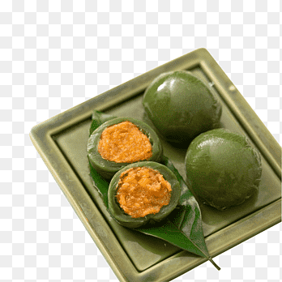
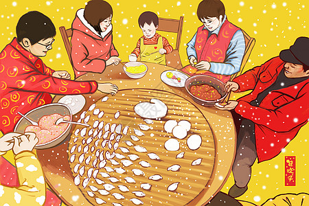
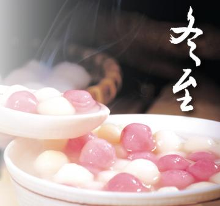
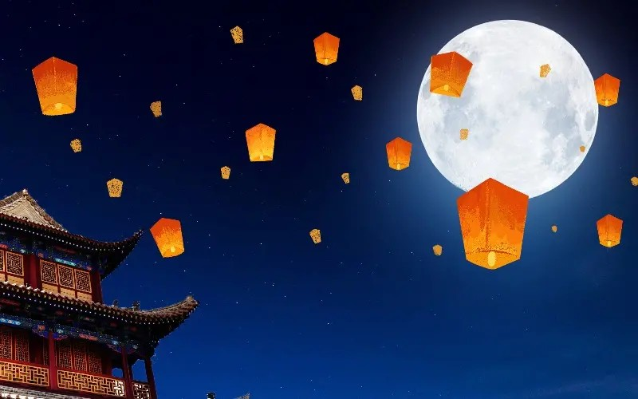
| 月份 | 节日 | 特色美食 |
|---|---|---|
| 二月 | 春节（中国新年） | 饺子或年夜饭 |
| 四月 | 清明节（扫墓节） | （可选）清明果或青团 |
| 六月 | 端午节 | 粽子（糯米团） |
| 八月 | 七夕节（“中国情人节”） | 巧果（七夕酥脆点心） |
| 十月 | 中秋节 | 月饼 |
| 十二月 | 冬至 | 汤圆（甜糯米团子） |
在拉丁裔社区开展的线下中华文化推广
- 定期在本地公共图书馆举办中国传统服饰试穿体验
- 定期在拉丁裔公立学校举办中国美食演示
- 定期在本地公共图书馆开设中国书法课
- 参加本地文化节
- 与墨西哥边境学校及非营利组织合作举办夏令营和冬令营
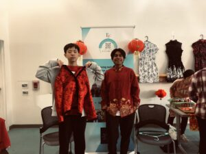
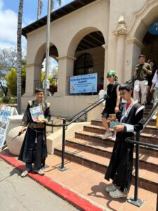
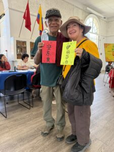
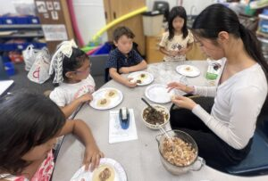
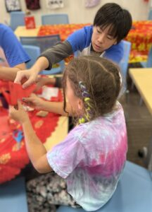
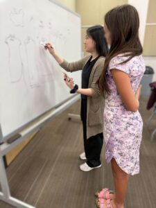
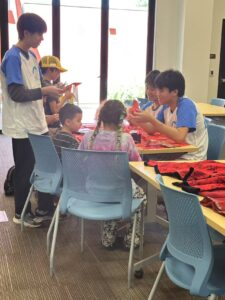
文化推广动态
-
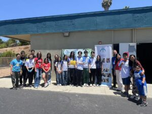
ESC Club 与 Riverview International Academy 举办 2026 夏季文化日，欢庆文化、社区与学习
alex — 2026年6月7日 -
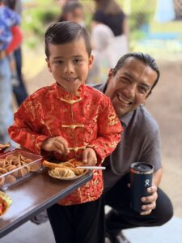
ESC Club 与 Riverview International Academy 联合举办 2026 农历新年庆典，欢庆文化、STEM 与社区
alex — 2026年2月16日 -

ESC Club 在蒂华纳 CWB Academy 举办跨境 STEM 与文化交流活动
alex — 2026年1月24日 -
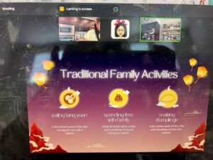
面向墨西哥及拉丁社区的 Luna 文化线上研讨会——和 Lola 一起搓汤圆
lanting — 2025年12月13日 -
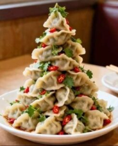
面向拉丁裔家庭的农历文化线上研讨会——“和 Alex 大厨一起包饺子”
alex — 2025年11月15日 -
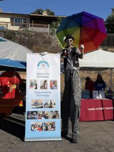
ESC Club 将中华文化体验带到 Riverview International Academy 文化节
alex — 2025年10月19日